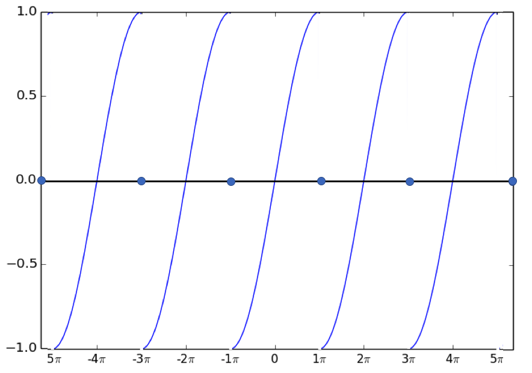

No intervalo \([-\pi,\pi]\) calcula a serie de Fourier de \(\sin (x/2)\). Discute a converxencia da serie en todo \(\mathbb{R}\).
A serie de Fourier dunha función definida no intervalo \([-\pi,\pi]\) está dada por $\( SF_f = \frac{a_0}{2}+\sum_{n=1}^{\infty} a_n \cos nx + \sum_{n=1}^{\infty} b_n \sin nx, \)\( onde \)\( a_0 = \frac{1}{\pi} \int_{-\pi}^{\pi} f(x) \mathrm{d}x, \qquad a_n = \frac{1}{\pi} \int_{-\pi}^{\pi} f(x) \cos nx \mathrm{d}x, \qquad b_n = \frac{1}{\pi} \int_{-\pi}^{\pi} f(x) \sin nx \mathrm{d}x. \)\( Como a función \)\sin (x/2)\( é impar no intervalo o término independente, \)a_0\(, e os coeficientes dos cosenos son nulos, \)a_n =0\(. En canto aos coeficientes dos senos \)\( b_n = \frac{1}{\pi} \int_{-\pi}^{\pi} \sin (x/2) \sin nx \mathrm{d}x = \frac{2}{\pi} \int_{0}^{\pi} \sin (x/2) \sin nx \mathrm{d}x =\frac{1}{\pi} \int_{0}^{\pi} \left(\cos\left(\frac{x}{2}-nx\right)-\cos\left(\frac{x}{2}+nx\right)\right)\mathrm{d}x \)$
onde se usou de novo que a función é impar e que
Polo tanto, a serie de Fourier asociada a esa funcíon é $\( SF_{\sin (x/2)}=\sum_{n=1}^{\infty} \frac{2(-1)^n n}{\pi \left(\frac{1}{4}-n^2\right)} \sin (nx). \)$
O teorema de Dirichlet garántenos que esa serie de Fourier converxe á extensión periódica da función excepto nos puntos \(x=n\pi\), con \(n\) enteiro, onde a extensión periódica da función presenta un salto $\( \lim_{x\to n\pi^-} = 1, \qquad \lim_{x\to n\pi^+}=-1. \)$
Neses puntos o teorema de Dirichlet establece que a serie converxe ao valor medio do salto, por tanto a serie converxe a cero en \(x=n\pi\). Véxase a figura.
{kind=link}
Determinar#
a serie de Fourier de
Sendo a función \(2\pi\)-periódica. Representar a función.
Como a función é par, os coeficientes de \(\sin nx\) son todos cero. O termo constante é o valor medio da función en \([-\pi,\pi]\):
(A integral aquí avaliouse usando a fórmula para a área dun triángulo.)
O coeficiente de \cos nx vén dado pola fórmula $\( a_n \;=\; \frac{1}{\pi}\int_{-\pi}^\pi f(x)\,\cos nx\;dx \)$
Dado que \(f(x)\) é distinto de cero só en \([-\pi/2,\pi/2]\), isto é o mesmo que
Ademais, como \(f(x) \cos nx \) é unha función par, podemos restrinxir a \([0,\pi/2]\) e duplicar a integral:
A integral da dereita pódese avaliar mediante a integración por partes. O resultado é:
Así
En forma de suma, $\( f(x) \;=\; \frac{\pi}{8} \,+\, \sum_{k=0}^\infty \frac{2}{\pi(2k+1)^2} \cos\bigl((2k+1) x\bigr) \,+\, \sum_{k=0}^\infty \frac{1}{\pi(2k+1)^2} \cos\bigl((4k+2)x\bigr). \)$

Determina#
a suma \(\sum_{n=1}^\infty \dfrac{(-1)^{n-1}}{4n^2-1}\) usando series de Fourier para a función \(|\cos{\frac{x}{2}}|\).
O coseno é \(2\pi\)-periódico, polo que \(f(x)=|\cos x/2|\) é \(2\pi\)-periódico. Como é par, os coeficiente con seno desaparecerán, só imos os coeficientes coseno.
Con \(T=2\pi\), temos
Dado que \(\cos (x/2)\geq 0\) para \(x\in[-\pi,\pi]\),
E xa que \(2\cos a\cos b=\cos(a+b)+\cos(a-b)\),
E \(\sin \left(\frac {2n+1}2\pi\right)=\sin \left(n\pi+\frac {\pi} 2\right)=(-1)^n\), polo que
E \(a_0=\frac 4{\pi}\) Agora,
E para \(x=0\),
E finalmente,